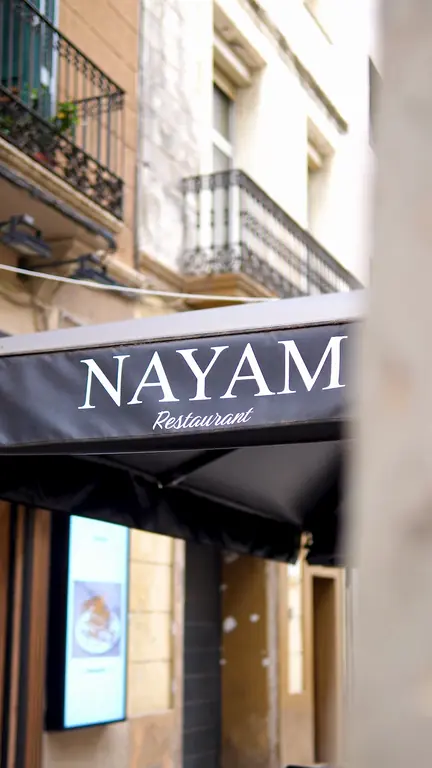

El brunch que Poblenou estaba esperando
Desayunos de aquí y del mundo, brunch, comidas y cenas. Cocina casera, todo el día, en el corazón de Sant Martí.
- 4,8valoración en Google
- 99reseñas en Google
- 18,6 milseguidores en TikTok
- 620,9 milme gusta en TikTok
Mira lo que pasa en Nayam
Visitas, platos y detrás de cámaras, directo desde nuestro TikTok. Toca un vídeo para verlo en grande.
Los vídeos empiezan sin sonido: toca el altavoz para activarlo y el vídeo para pausarlo.
Del desayuno a la cena
Cocinamos cada plato al momento, con ingredientes frescos. Toca uno y te llevamos a la carta.

Nuestra carta
Elige una categoría y toca la foto para verla más grande. Precios con IVA incluido.
Nuestros clientes hablan
Lo que suben nuestros clientes
Fotos reales de platos y del local, publicadas por quienes nos visitan.
Fotos publicadas por clientes en Google Maps.
Un rincón acogedor en Poblenou
Nayam es un rincón acogedor en Poblenou donde el desayuno no tiene hora. Cocinamos cada plato al momento, con ingredientes frescos, para que disfrutes de un buen brunch, una comida tranquila o una cena entre amigos.


Reserva tu mesa
Reserva en segundos por WhatsApp, sin formularios largos.

Encuéntranos en Poblenou
- Dirección
- Carrer del Doctor Trueta, 218
08005 Barcelona · Poblenou (Sant Martí) - Teléfono
- +34 673 327 809
WhatsApp y teléfono
Horario
